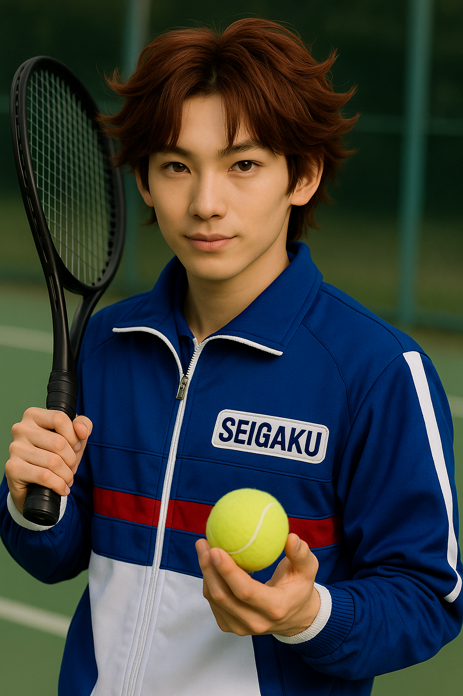

まずは12代目 菊丸英二の顔を見てきてください。
▶ 英二を見るさすがに菊丸英二すぎる！
原作やアニメ版の画像をそのままAIに食わせて美しく生成したら、
この顔が生まれるのではないでしょうか？
そう思って「AI生成菊丸」と言い慣わしてきました。
今回はそれを実証していきたいと思います！
🎾 やり方
1. AIにインターネット上にある「菊丸英二」の情報を読み込ませる
2. その情報をもとに実写画像を生成してもらう
とっても簡単。
そして最初に生成されたのがこちら。
あ〜。
「まだ可愛い路線で行くかどうか迷っている27歳の菊丸英二」だ。
そんな英二は見たくない。
とはいえ路線は悪くなかったと思う。
髪などはそこそこ再現できてるね。
🎾 追加指示
「もう少し目を大きく」「中学生らしく幼く」「中性的な顔立ち」etc.
足りてなさそうな要素をもろもろ足してみる。
経験上、あまり一気に指示を入れすぎると、
多分全然違う人になっちゃうから制御が難しい。
どうだ！？
かわいい〜！誰！？
英国育ちって感じだね〜
テニスが紳士のスポーツだったことを思い出させてくれる。
こんなお上品な子は青学にはいない。
お前は緑山中に行け。
🎾 追加指示
「15歳」「猫目」etc.
年齢もさることながら、おめめがまんまるすぎるのがいけないのかも。
この子がもう少し天使からヤンチャ系に成長すれば、
ちょうどいい具合に菊丸（実写）になりそう。
はつらつさ、天真爛漫な雰囲気自体は悪くない！
どうかな？
天使、脱せず。
あ〜もう顔が笑ってすらいない。
これはこれで美しいが…方向性が柳生比呂士（4th）だね。
なぜか文字入り。柳蓮二が発行している雑誌？
顔はいいけどこの人テニスやってなさそう。
後ろにレコードとか飾ってるし。
🎾 追加指示
「1枚目に生成した画像に服装と髪型を寄せる」
アンニュイな雰囲気を除けばいい気がする。
最初に生成された27歳菊丸の雰囲気だけを引用することができれば…。
元気はつらつ、美英二が出てくる気がする。
もう完成する気がする！
耽美をかき消せ！！
惜しい〜〜〜！
キッズに戻っちまった！大石の大バカヤロ〜〜〜！
これはこれですごくかわいい、すごくテニミュキッズだね。
次回の関東立海に菊丸（幼少期）として出演する気はありませんか？
🎾 追加指示
「この子を15歳に成長させる」
これでいけるはず！
ちょっと可愛すぎて力強さをそこまで感じられないけど、
今、10歳くらいだからあと5歳歳を取れば
菊丸英二（実写版）がやってくるはず…。
いけるぞ！！！
は〜〜〜JO1の人きちゃった。
もうジャージですらないじゃん。喪服かな〜。
申し訳程度の「SEIGAKU」。
どんなにイケメンでもこれで菊丸英二って言われたら
さすがにファンと大石が黙ってないよ〜。
英字はこんなに利発そうじゃない。
🎾 追加指示
「眉毛をもう少し薄く」「副は青学ジャージ」
多分凛々しすぎるんだと思う。
もうちょっと薄眉だったらいいんじゃない？
顔が濃すぎるんだよね。
あと服はやっぱりジャージに戻したいよね。
そろそろ来るかな？
まだかな？
海堂薫来ちゃった。
というわけで、
たとえAIでも菊丸を実写化することはできない。
12代目 青学 菊丸英二が最高傑作だということでした！
AIを持ってしても生み出すことのできない、
神の創りし菊丸英二を、公演でしかと見届けよ〜〜！
🎾 追加指示
「なんでもいいからかっこよく頼む〜〜〜！」

さようなら！